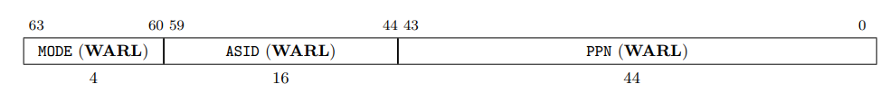
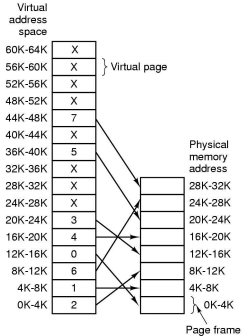
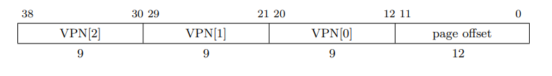
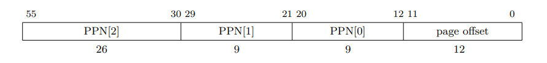
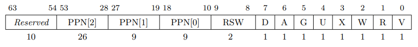
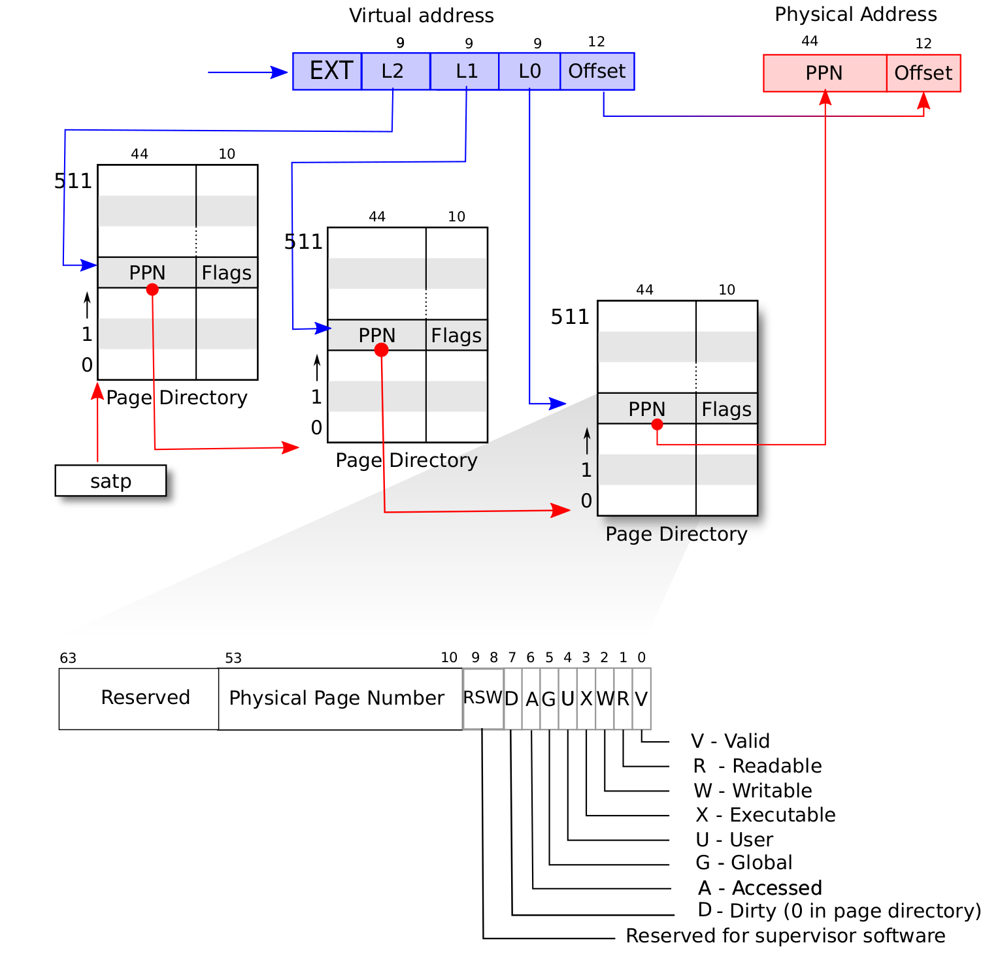

内存管理
1. 实验说明
在之前的实验中，我们已经完成了进程的管理和通信，并实现了例外的处理，使得我们的操作系统可以正确的运行一个或多个进程。但是，细心的同学们可能会注意到，我们每个进程的地址空间需要事先通过编译确定，这样多个进程才能同时在一个地址空间内运行而不互相干扰。
但是，如何事先就预知有哪些进程会在一起运行呢？能不能动态的加载进程到任意一个空闲的地址区域内，并且进程间不会互相干扰呢？虚拟内存机制就能帮我们做到这一件事。我们可以给每个进程一个“虚拟”的地址空间，每个进程认为自己能访问到的地址空间都是一样的，并且互相不会干扰。
此外对于操作系统来说，安全也是一个重要的功能。系统的数据安全必须要靠数据隔离来实现，而基于虚拟内存的内存管理，也是操作系统中用来确保数据隔离的重要机制。
在本实验中，我们将学习操作系统的虚拟内存管理机制，包括虚实地址空间的管理，换页机制等。请同学们认真思考各部分的设计，考虑操作系统的安全性和性能，完成好虚拟内存管理的功能。
本次实验的各个任务如下，做 S-core 的同学需要完成任务一，A-core 的同学需要完成任务一至任务四，C-core 的同学需要完成所有任务：
任务一 启用虚拟内存机制进入内核，实现内存隔离机制，从 SD 卡中加载用户程序，使用户进程可以使用虚拟地址访问内存。
任务二 实现缺页处理程序，发生缺页（page fault）异常时自动分配物理页面。并验证之前的进程锁实现在虚拟内存机制开启的情况下依然有效。
任务三 实现换页机制，在物理内存不够时或者当物理页框不在内存中时，将数据与 SD 卡之间进行交换，从而支持将虚拟地址空间进一步扩大。
任务四 实现系统可用内存查看功能。
任务五 实现进程间页的传递，实现进程间通信的数据零拷贝。
各个 core 的同学需要完成的任务如下表所示。另外，欲完成 C-core 的同学需要全程使用双核运行操作系统。
| 评分等级 | 需要完成的任务 |
|---|---|
| S-core | 任务一 |
| A-core | 任务一、二、三 |
| C-core | 任务一、二、三、四、五。 |
2. 本章解读
这一部分的要点是：
- 理解 RISC-V 处理器的虚拟内存机制
- 理解页表的基本原理和实现
本章最重要的就是 理解地址是怎么映射的。说简单点，其实虚拟内存机制就是一套虚拟地址到物理地址的映射。快表（TLB）相当于页表的高速缓存。那么页表是什么样的结构呢？一说到映射，很多人想的可能是一个页表项需要存储一个虚地址一个物理地址，然后每次查整张表匹配虚地址，然后再找到对应的物理地址。但实际上，页表只存物理地址。你可以把页表想想成一个数组，数组的下标是虚地址，数组的内容是下标所对应的物理地址。当然，虚地址空间很大，而且可能很多我们都不会用到，所以可以采用多级页表，每次索引虚地址的几位，查到下一级页表的物理地址，直到查到最后一级页表，页表项里面存的才是对应的物理地址。
核心要点
页表存储的都是物理地址，处理器访问的都是虚地址。
3. 启用虚拟内存机制
说到内存，同学们想必已经不再陌生，不仅是因为每台计算机中都有内存，而且同学们在之前的 Project 中，已经知道了我们操作系统的 boot block 会放在0x50200000的位置，并且能将用户程序加载到对应的内存地址并执行。不仅如此，同学们在调试中可能也会偶尔发生系统报告 page fault 的错误，报这样的错是因为访问到了0x50000000- 0x60000000之外的地址。
内存中保存了程序所需的所有代码和数据，其内容不能被随意篡改，也不应该被其他的程序随意访问。因此，安全性是操作系统最重要的功能之一，在进行操作系统设计时必须予以考虑。通过理论课的学习，我们已经了解到，操作系统通过虚拟内存的机制来实现对内存数据的保护，但是我们研讨课所编写的操作系统到目前为止显然还没有这样的功能，所以在本实验的第一个任务中，我们就先把操作系统最基本的虚拟内存机制建立起来。
3.1. 虚拟内存的基本概念
虽然大家理论课已经学过，但这里为了便于理解还是简述一下虚拟内存的概念。大家可以回忆一下前面我们的用户测试程序的加载方法：把内存当成巨大的数组，每一个元素是一大片可供程序存放的空间，每个任务加载进内存后，都占用了其中一个元素。这种方法会造成一个棘手的问题，即若某个程序访问、修改了其他程序的内存，可能会读取到错误数据、影响其他程序运行，带来严重的安全隐患。
为了解决这个问题，人们设计了虚拟内存机制。我们之前实现的进程调度机制能够让每个进程都认为自己独享了整个 CPU，但实际上它们只是占用了 CPU 的一些时间片，并没有完全独占 CPU，而是在与分时共享。虚拟内存的思想与之类似：每个进程都自认为独享了整个内存，但实际上它们只是分享了物理内存的不同部分。 CPU 共享中的基本单位是时间片，而物理内存则被分割成不同的页以分享。虚拟内存管理机制将物理内存切分为固定大小的 页框 (page frame)，并送给不同进程，支撑起进程的内存地址空间。为了禁止跨进程的内存访问、给不同进程提供同样的内存环境，进程访问的地址并不是真正的物理地址，而是内存管理程序为它提供的虚拟地址。地址空间即一个可以被地址索引的存储空间。我们为每个进程提供一个独立的虚拟地址空间，勒令进程仅能访问此空间内的地址。同时我们按照页的大小（和页框的大小一致）分割虚拟地址空间，设置其与物理内存空间之间的对应关系。这样当程序访问一个虚拟地址的时候，若其有对应的物理地址，操作系统和处理器就可以完成地址换算，进行访存操作。由虚拟地址向物理地址的翻译通常由处理器自动完成。
记录虚拟地址页与物理页框对应关系的数据结构就叫 页表 (page table)。
3.2. 内存控制相关的 CSR
内存管理单元 MMU（Memory Management Unit）是负责处理 CPU 中访存请求的计算机硬件，它需要处理虚拟地址到物理地址转换的计算与设置（内存地址翻译、虚拟内存管理）、内存保护、CPU cache 的控制，而我们主要关心它与虚实地址转换的关联。
在 RISC-V 指令集规定下，虚拟内存管理默认关闭，CPU 的访存操作地址会直接送往物理内存。Supervisor 特权级的satp寄存器可以控制分页机制，若启用，在 S/U 特权级下的访存操作地址会被视为虚拟地址，会被 MMU 地址翻译成物理地址再送往物理内存进行后续操作。
MMU 会根据satp寄存器中记录的物理地址去查找页目录，发现整套页表，并依据虚拟地址检索对应的页表项，得到实地址，完成内存地址翻译。 satp寄存器的结构如下所示。

PPN代表页目录位置的物理页框号。页目录的起始地址必须按 4KB 对齐。ASID表示当前地址空间的 ID。每个进程都有自己独立的地址空间，这个标志位能够用来区分不同进程。MODE表示当前的地址翻译模式，其编码格式如下表所示。
| Value | Name | Description |
|---|---|---|
| 0 | Bare | No translation or protection. |
| 1--7 | --- | Reserved |
| 8 | Sv39 | Page-based 39-bit virtual addressing. |
| 9 | Sv48 | Page-based 48-bit virtual addressing. |
| 10 | Sv57 | Reserved for page-based 57-bit virtual addressing. |
| 11 | Sv64 | Reserved for page-based 64-bit virtual addressing. |
| 12--15 | --- | Reserved |
代码框架中的 arch/riscv/include/pgtable.h 头文件包含了 Sv39 地址翻译模式需要用到的宏定义，其中的set_satp()函数可以用于设置satp寄存器。该函数有三个参数，分别对应着satp的MODE，ASID以及PPN。如下代码可启用 Sv39 虚拟内存模式，并将页目录设置为0x51000000地址处的物理页框。
// satp_MODE_SV39为8，ASID为0，NOMAL_PAGE_SIZE为12，代表4KB的偏移
// 这些宏定义定义在pgtable.h
set_satp(satp_MODE_SV39, 0, 0x51000000 >> NORMAL_PAGE_SHIFT);
3.3. 页框（page frame）
虚拟内存机制的核心是分页机制。如下图所示，分页机制设定的虚拟/物理地址空间都被划分为固定大小的页框，两者之间的对应关系以页为单位设定。为构建分页机制，同学们需要将物理地址空间划分为一个个页框。但是同学们并不需要用程序来特地划分，只需要在设计中了解这一点。

3.4. 地址格式
RISC-V 一共支持 Sv32、Sv39 和 Sv48 这三种虚拟内存管理模式，它们分别支持 32 位、39 位和 48 位虚地址，需要采用二级、三级、四级页表进行软/硬件实现。
我们的操作系统将在 64 位的 RISC-V 处理器上启动，虽然此时虚拟地址位宽应为 64 位，但是启用 Sv32/39/48 分页模式时，只有对应的低 32/39/48 位有意义。以 SV39 为例，规定中虚拟地址的[63:39]这几位必须和第 38 位相同，否则 MMU 会直接认定它是一个不合法的虚拟地址。通过此检查后，MMU 会取出低 39 位，并尝试将其转化为一个 56 位的物理地址（数字 56 的来历会在下文提及）。
由于我们实验环境配备的物理内存只有 256MB 大小，28 位地址就能够索引全部的物理地址空间，实现四级页表过于复杂且必要性不大，所以我们选择让同学们实现 Sv39 模式，采用三级页表进行索引。 Sv39 支持的虚地址和物理地址格式如下图所示。在分页管理的模式下，我们规定实验中的页大小为 2^12 = 4KB，每个虚拟页面和物理页框的地址都需要按页对齐。一个内存地址因页大小自然地分为两半：页号和页内偏移。 [11:0]是页内偏移 (Page Offset)，是地址于其所在页面中的相对位置。虚拟地址的[38:12]是虚拟页号 (VPN, Virtual Page Number)，物理地址[55:12]是它的物理页号 (PPN, Physical Page Number)，用来定位地址所属的页面/页框。
Sv39 虚地址

Sv39 物理地址

简单来说，地址翻译的就是 MMU 从 39 位的虚地址中，取出 27 位 VPN 作为“索引”，在页表中查询对应的 44 位 PPN，如果成功的查找到了，则将 44 位 PPN 与 12 位 offset 拼接成物理地址，否则会产生翻译错误。
页框是管理物理内存的基本单元，页框的大小决定了物理内存分配的粒度。虽然现有的大部分计算机系统将页框被设置为 4KB，但它们也支持粗粒度的内存分配，具体方法为在分页机制中选择性放弃一级或多级页表，转而将中间产生的页作为更大的页使用，这一点会在后文中提到。
3.5. Sv39 页表项说明
页表就用来存储从虚拟页面到物理页框的对应关系（由于并非所有虚拟页都对应了物理页框，所以这类似于一个偏函数）。作为一个数据结构，页表本身也需要占用内存的一块空间（为了内存管理，这块内存可以是一些物理页框）。在本任务中，我们需要在内核初始化时划分一块**物理页框**用于存放页表。页表中的每一个条目都是一个页表项 (page table entry, PTE)，保存了虚拟地址到物理地址的映射关系。其抽象数据结构如下图所示。页表项中除了保留的最高数位（为 Sv48 所保留），包含了 PPN ([53:10]) 和标志着页面的 8 个不同属性的不同标志位 ([7:0]位)，具体说明如下：
Sv39 页表项

-
R(Read)、W(Write)和X(eXecute) 分别代表页表项对应的页面是否有读/写/执行权限。 -
G(Global) 代表页面是否全局可用。对于全局可用的页，访问的时候会忽略
ASID的标记。这个标志位可以便利一些全局页表项与 TLB 的交互。本实验中可以不关注其功能，但对于非叶子结点的页目录，请将这一项置 0。 -
A(Access) 和D(Dirty) 分别可以用来代表页面的访问、脏数据性质，可以用来表示页面是否被访问、修改过。对于非叶子结点的页目录，请将这两项置 0。这两位的具体行为取决于硬件的实现。硬件可以在一个页被访问/写入时自动将 A/D 置位，也可以直接产生缺页异常。
我们实验中使用的 FPGA 开发板上的 RISC-V 核按后者实现。 如果
A为 0 且发生了对这个页面的访问、D为 0 且发生了对这个页面的写入，都会直接触发缺页异常（写入也算内存访问的一种）。 -
U(User) 代表用户权限。该位为 0 时，于 User 特权级对此页面的访问会触发缺页异常。如果sstatus寄存器的SUM位为 1，则 Supervisor 态下也可访问U位为 1 的页面。对于非叶子结点的页目录，请将这一项置 0。 -
V代表 Valid 位，V被置位时该页表项有效。
注意
当系统出现缺页异常时，需要同学们考虑上述 bit 位未设置正确的情况。
3.6. 页表与地址转换过程
多级页表
页表一般按页大小存储，以便内存管理。根据上面的设计，本实验中一个页表项需要 8B 存储空间，一个 4KB 的页表可以容纳 \(512=2^9\) 个页表项。与此同时，我们设计VPN/PPN为 9 位，将其作为索引，用于在页表中定位一个页表项。
随着页表项中的X/W/R位的不同，页表的含义也有不同，这与叶子节点（末级页表）与非叶子节点（页目录表，非末级页表）有关，具体如表所示。倘若R/W/X位均为 0，则标志着该节点为非叶子节点，否则为叶子节点。叶子节点需要将R/W/X位按相应权限设置。
| X | W | R | Meaning |
|---|---|---|---|
| 0 | 0 | 0 | Pointer to next level of page table. |
| 0 | 0 | 1 | Read-only page. |
| 0 | 1 | 0 | Reserved for future use. |
| 0 | 1 | 1 | Read-write page. |
| 1 | 0 | 0 | Execute-only page. |
| 1 | 0 | 1 | Read-execute page. |
| 1 | 1 | 0 | Reserved for future use. |
| 1 | 1 | 1 | Read-write-execute page. |
叶子节点中需要记录 512 个页表项，表项中的 PPN 与虚拟地址的 offset 拼接即可得到地址翻译结果。非叶子节点中功能上只需要记录 512 个下一级节点的位置。鉴于页表节点的内存对齐属性，我们可以以与叶子节点相同的格式保存 512 个页表项，以拼接后的物理地址代表下一级页表的起始地址，这样我们便可以实现非叶子节点存储下一级页表的功能。
地址转换过程

Sv39 模式下三级页表的地址转换过程如上图所示。在下文中，我们用第三/二/一级页表，分别指代访存次数意义上距离satp寄存器由近及远排序的三个页表层级（即图中自左向右的三个层级。这个地址翻译过程在访存时会由硬件自动完成，软件只需为新进程在内存中设置好这三级页表与satp寄存器。对于一个 39 位的虚拟地址 vaddr = {VPN2[38:30], VPN1[29:21], VPN0[20:12], offset[11:0]}，地址翻译的过程大致如下：
- 操作系统已经记录好了“当前应使用的第三级页表”的 PPN 到
satp寄存器中； - 以
VPN2作为索引值，在第三级页表中找到对应的第二级页表页表项，获得其中 PPN，用PPN << 12作为第二级页表的物理地址； - 以
VPN1作为索引值，在第二级页表中找到对应的第一级页表页表项，获得其中 PPN，用PPN << 12作为第一级页表的物理地址； - 以
VPN0作为索引值，在第一级页表中找到对应的物理地址页表项，获得物理地址的 PPN； - 物理页号对应的物理页基址加上虚拟地址的页内偏移（
PPN << 12 + vaddr.offset）就是虚拟地址vaddr对应的物理地址paddr。
上述的过程中，CPU 利用多级页表对虚拟地址进行逐级翻译，得到其对应的物理地址，这个过程称作 page walk。图中的页表查找过程可以用 C 语言伪代码表示为下面的伪代码。如之所示，查找过程中，硬件会判断每一级对应的页表是否存在，若存在则继续地址翻译，否则触发缺页异常，等待操作系统处理。
PTE* pgdir[512]; // 假设这是最高一级的页目录
if (pgdir[vpn2] != 0) { //假如对应的页表项不是空的
// 从页目录项中获取下一级页目录的虚地址
// 这里注意，页目录项中存的是物理地址
// 但CPU都是通过虚地址访问的，因此这里需要转换一下
PTE* second_level_pgdir = get_va(pgdir[vpn2]);
if (second_level_pgdir[vpn1] != 0) {
PTE* last_level_pgdir =
get_va(second_level_pgdir[vpn1]);
if (last_level_pgdir[vpn0] != 0) {
uint64_t ppn =
get_ppn(last_level_pgdir[vpn0]);
// 这里查找到的ppn就是物理页号
// 加上页内偏移就可以形成物理地址
}
}
}
当然，S-core 中并不要求大家完成页表的动态分配。为了简化、拆分任务，同学们可以静态填好所有页表项。
Note
在介绍完页表结构后，我们在这里对“多级页表可以节省空间”解释一二。
以 32 位操作系统为例，若每个页表项 4B，每页 4KB。
如果使用一级页表机制，那么管理全部 32 位地址空间需要 4GB / 4KB * 4B = 4MB 大小的空间来存放页表。
而如果使用二级页表机制，需要一个大小为 4KB 的 1024 项页目录，负责索引[31:22]这高 10 位地址，其中每一项又对应一个大小为 4KB 的 1024 项二级页表，负责索引[21:12]这中间 10 位地址，一共需要 4KB + 1024 * 4KB = 4MB + 4KB，比使用一级页表机制还要大。
但是，进程并不会使用虚拟地址空间中所有的页，没有必要为分配全部页表来进行管理。 因而在二级页表翻译机制实际的处理方法中，操作系统一开始只会为进程创建第二级的页目录，第一级的页表待有需求时才分配。 对于程序没有使用的虚地址空间，系统不会浪费内存去记录它，因此多级页表翻译机制能够节约内存空间。
大页的概念
根据上述的介绍，如果页表项的 V 位为 1，且 R/W/X 位不全为 0，则该页是叶子节点。这样的情况可以发生在多级页表的任何一级页表上。在本任务书中，我们暂时将“利用页表项/satp寄存器找到下一级页表的物理地址、再使用VPN找到虚拟地址在下一级页表中对应的页表项”的过程，也就是 page walk 中的一步，称为一次页表索引。Sv39 中：
- 如果索引一步就遇到叶子节点，则计算机认为 VPN 只有 9 位，offset 有 30 位，会找到一个大小为 2^30 B = 1GB 的页；
- 如果索引两步就遇到叶子节点，则认为 VPN 有 18 位，offset 有 21 位，对应找到一个大小为 2^21 B = 2MB 的页；
- 如果索引三步才遇到叶子节点，则和我们一般的认知相同，认为 VPN 有 27 位，offset 有 12 位，对应 4KB 的页大小。
所以，如果我们设置好第二级页表的页表项，使之 R/W/X 位不全为 0，那么页表项中 44 位 PPN 的前 35 位（图 Sv39页表项中的{PPN[2], PPN[1]}）与 offset（图 Sv39虚地址中的{VPN[0], page offset}）组合为最终翻译的物理地址，那我们就成功使用大页进行了地址翻译。对于 1GB 和 2MB 的大页映射，所映射的物理大页也需要是 1GB 或者是 2MB 对齐。
大页的优点在于节省页表数量。当虚拟地址空间的大块连续区域的访问权限相同、使用程度均匀时，可以直接使用大页管理，减小页表项数目以降低内存占用度与地址翻译时间开销。大页的缺点在于管理粒度粗、对内存管理程序要求高。操作系统不断为进程分配细粒度空间会导致内存碎片化，若内存管理不佳，寻找一个空闲的大页可能不是那么容易。
3.7. 快表（TLB）及 TLB 相关指令
MMU 中的快表（TLB, Translation Lookaside Buffer） 作为 VPN 到 PPN 的映射的暂存单元，试图挖掘访存局部性，减少地址转换中访存操作次数，大大提高虚实地址翻译效率。
在正常访问过程中，TLB 是由硬件自动填充、替换的，操作系统无需操作其中内容。但在 TLB 中的内容失效、需要清空时，本实验 RISC-V 指令集的操作系统需要利用 sfence.vma 指令清空整个 TLB。详细来讲，由于不同进程对应的内存地址空间不同，进程切换时，操作系统需要同时切换satp以实现页目录和页表的切换，同时快表内暂存的映射失效。操作系统主动修改某个页表的页表项后，由于虚实地址转换的映射变动，TLB 也会失效。但 TLB 并不会自动刷新清空，因为 CPU 并不知道地址翻译发生变化，因此内核要在修改 satp 后立即使用 sfence.vma 指令告知 CPU 清空 TLB 中所有项。
sfence.vma 指令可以以一个虚拟地址作为指令操作数，以刷新指定虚拟地址在 TLB 中对应的页表项，否则默认刷新整个 TLB。我们已经在框架中将次指令加入设置satp寄存器的函数中，并且在 arch/riscv/include/pgtable.h 头文件中封装好了基于该指令的 local_flush_tlb_all() 与 local_flush_tlb_page() 函数，可供同学们使用。另外需要注意，如果对地址映射进行了修改，必要的时候还需要用 fence 和 fence.i 刷新数据/指令 cache，后者被封装成了 local_flush_icache_all() 函数。
3.8. 虚拟内存的软硬件协同
读到这里，不知道同学们对实现虚拟内存机制需要执行的任务是否已经清楚，如果仍觉得有不清楚之处，希望大家能仔细阅读任务书及其他资料，在理解概念、完成设计之后再开始编程。在这一节中，我们也将分别整理软件和硬件的任务，方便大家的理解。
硬件的工作
虚拟内存管理中硬件的工作总结如下：
- 判断虚拟内存是否已被启用。若是，则尝试查询 TLB，寻找是否已有缓存好的虚实地址映射。
- 若 TLB 不能协助翻译，则进行虚拟地址到物理地址的转换。硬件会自动根据
satp寄存器与当前的虚拟地址，查询多级页表，根据当前节点是否为叶子节点决定是应当将 PPN 和 offset 拼接成为最终的物理地址，还是继续检索下一级页表。 - 进行权限检查，根据页表项中
X/W/R等位进行权限判断，如果权限错误则触发对应例外。 - 检查虚拟地址是否存在对应的映射即是否缺页，如果缺页在则触发对应的例外。
Tip
上述提到的例外 在 Project 2 任务书中的例外表有相关的说明，请大家注意查看。
软件的工作
虚拟内存管理中软件的工作（也就是操作系统的工作）总结如下：
- 通过管理相应的 CSR 控制当前的访存模式。
- 操作系统需要为进程建立需要的页目录，并将根页表的 PPN 填入
satp寄存器中，在进程切换时也需要对应的切换satp中的 PPN。 - 处理与虚实地址转换、访存相关的一些例外。
- 在有需要时刷新 TLB。
同学们到这里应当基本了解虚拟内存机制的实现方式了。我们下面将介绍各个任务，带领同学们为内核、用户程序启用虚拟内存机制，再来逐步完善它。
3.9. 任务一：启用虚拟内存机制并进入内核
内核虚拟地址空间介绍
为了能使得我们的内核能够启用虚拟内存，框架代码在编译、链接时就需要将内核安排在虚拟地址空间上，即将内核的入口设置为内核虚拟地址。启用 SV39 分页模式后，39 位虚地址最高位为 1 意味着该空间为内核空间，否则为用户空间，即用户与内核平分共 512GB 的虚拟内存地址空间。本实验中我们严格遵循这个规范。
在内核页表初始化时，我们直接将物理地址空间与前 32 位为0xffffffc0的虚地址空间（最高位[38]为 1，[37:32]这 6 位为 0 的 Sv39 虚拟地址，后 32 位任意选取）之间建立一一映射，开启虚拟内存后，内核便在这个虚地址空间上运行，在形式上这比起运行在物理地址空间只是添加了一个地址前缀。我们在Makefile中将内核入口地址设置为0xffffffc0_50202000，它实际对应着物理地址0x50202000。为了方便内核管理物理内存，内核使用的虚实地址转换映射一般为平移操作。因此，我们的操作系统内核能够自由支配 4MB 大小的物理内存。（因虚拟地址过长，为方便读者阅读，任务书中将 64 位虚拟地址以下划线分成两部分表示）
Note
本实验中，物理地址0x50200000会被映射到0xffffffc0_50200000，而 0x55200000 会被映射到0xffffffc0_55200000，内核使用的虚拟地址是物理地址平移0xffffffc0_00000000的结果。
这样，如果我们想在内核中管理多级页表，那么根据页目录记载的下一级页表物理地址直接做平移（加上固定的偏移量），就能得到内核可以使用的虚地址，我们就可以通过这个内核虚拟地址访问下一级页表。
如果我们想要为进程分配一个 4KB 的用户态物理地址页面，比如0x55201000，只需在内核中分配地址0xffffffc0_55201000处的页面。
通过以内核虚拟地址表达物理地址的方式，内核可以轻松地管理整个物理内存。
一旦启用虚拟内存，指令便只能通过虚拟地址进行访存，无法直接使用物理地址，所以很多情况下必须使用物理地址对应的内核虚拟地址。 鉴于不同进程的内核虚拟地址映射相同，在靠后的实验当中，同学们可以考虑使用相同的页表完成不同进程在内核态中的地址翻译。
启用虚拟内存机制并进入内核
在 CPU 刚刚启动、进行初始化时，虚拟内存机制并没有立即启用，也没有页表可供地址翻译使用，操作系统直接运行在物理地址空间上。在初次进入操作系统内核的初始化过程中，内核需要一段使用物理地址的代码来准备内核页表、启用虚拟内存。
我们将内核的入口指定为这一段代码，当 boot block 搬运内核到对应的物理地址后立即跳转到内核入口开始执行这一段代码。这一段代码我们已经在 start code 框架中提供，核心代码位于 arch/riscv/kernel/start.S 和 arch/riscv/kernel/boot.c中。
Note
由于 Makefile 与链接器的设置，这段代码和内核被编译到一个输出文件中，且一并按照启用内核虚拟地址后进行链接，所以这段代码如若使用标号作为绝对地址，链接器会认为它需要一个内核虚拟地址，而非物理地址，因而出现地址计算错误。 而如果使用相对地址寻址，由于我们选用平移作为内核虚拟地址的地址转换映射，链接器求出的两个内核虚拟地址的差，恰好等于实际需要计算的两个物理地址的差，故不会出现错误。
所以说，这段代码内所有的分支跳转、数据寻址都不能使用绝对地址，只能使用相对于当前 PC 的相对地址。
这对代码的编写提出了严格的要求，比如不能使用 switch 语句、不能使用指针数组等等。
框架应已在编译时将内核入口指定为 _boot，这段代码位于 arch/riscv/kernel/start.S 中。
arch/riscv/kernel/boot.c 中的boot_kernel()函数将会建立内核页表，把内核空间映射为 2MB 的大页跳转到内核的真正入口。核心代码如下：
extern uintptr_t _start[];
/*********** start here **************/
int boot_kernel(unsigned long mhartid)
{
if (mhartid == 0) {
setup_vm();
} else {
enable_vm();
}
/* 进入内核后将永远不会返回 */
((kernel_entry_t)pa2kva(_start))(mhartid);
return 0;
}
boot_kernel() 的参数为mhartid。启用虚拟内存机制后，需要跳转到标号_start（即之前实验中的内核入口），但此处跳转指令中的_start地址是相对PC计算所得，是_start的内核虚拟地址与当前指令的内核虚拟地址的差；而我们刚开启虚拟内存，尚在使用物理地址（其实是和物理地址相等的虚拟地址，此时内核采用临时的映射将其映射到相等的物理地址上）执行程序，以物理地址计的PC并不能依靠相对地址计算出_start的内核虚拟地址，理论上我们需要将PC转化为对应的内核虚拟地址，才能正确使用相对地址跳转。但是如此改变PC并不现实，所以我们将得到的_start的物理地址转换成内核虚拟地址，然后再进行跳转。这就是((kernel_entry_t)pa2kva(_start))(mhartid)这段代码的由来，同学们可以使用 gdb 查看程序动态执行过程，并结合编译产生的二进制代码，理解此处程序的设计。
如果同学们想要使用双核进行实验，那么需要注意，主核和从核各自是一个 CPU，各有一套 CSR，因此各有一个satp寄存器。主核需要完成内核页表的映射并设置satp寄存器、启用虚拟内存，从核只需要设置satp寄存器。
目前整个内核的启动流程变成了 _boot->boot_kernel->_start->main。前两个阶段运行在实地址上，只访问物理地址。随后都运行在内核虚拟地址上，只访问虚地址。
同学们可以把实验一分为两部分完成。start code 中已经完成了启用虚拟内存机制的框架代码，第一部分中同学们需要补全、修改部分代码，启动内核并打印出框架中已经写好的提示信息。第二部分中，同学们需要完成 任务一续 的内容，实现用户程序的加载和运行。我们已在main()函数中添加下面的代码来拆分这两个部分：
/*
* Just start kernel with VM and print this string
* in the first part of task 1 of project 4.
* NOTE: if you use SMP, then every CPU core should call
* `kernel_brake()` to stop executing!
*/
printk("> [INIT] CPU #%u has entered kernel with VM!\n",
(unsigned int)get_current_cpu_id());
// TODO: [p4-task1 cont.] remove the brake and continue to start user processes.
kernel_brake();
这段代码的作用是让 CPU 在完成内核的部分初始化工作后打印一行提示："CPU #$i$ has entered kernel with VM!"（其中\(i\)是当前 CPU 核的 ID），然后调用函数kernel_brake()暂停（该函数将关中断然后陷入无限循环），而不再执行后面的程序。同学们若能开启虚拟内存机制启动内核并在屏幕上看到这行输出（实现 C-core 的同学为启动双核，应见到两行输出，并且可能需要考虑屏幕光标的位置，以防止两个核的打印结果重叠），则可认为任务一的第一部分完成。在接下来的 任务一续 中，请同学们移除对kernel_brake()的调用，以正常执行后续操作。
实验要求
启用虚拟内存机制并进入内核。
实验步骤
- 请大家仔细阅读注意事项后再开始本次任务。
- 修改
arch/riscv/boot/bootblock.S，将内核搬运到0x50202000处。 - 内核页表映射的代码我们已经为大家写好，请大家认真阅读并理解代码实现。熟悉这一部分的代码对后续建立用户页表有所帮助。
- 完成
arch/riscv/include/pgtable.h中的函数，以供本实验中使用，其功能如下表所示。
| 函数名称 | 函数功能 |
|---|---|
kva2pa(uintptr_t kva) |
将内核虚地址转换为物理地址 |
pa2kva(uintptr_t pa) |
将物理地址转换为内核虚地址 |
get_pa(PTE entry) |
从页表项读取物理地址 |
get_pfn(PTE entry) |
从页目录读取页框号 |
set_pfn(PTE *entry, uint64_t pfn) |
为页表项设置页框号 |
get_attribute(PTE entry, uint64_t mask) |
从页表项读取页属性 |
set_attribute(PTE *entry, uint64_t pfnbits) |
为页表项设置页属性 |
clear_pgdir(uintptr_t pgdir_addr) |
清空页目录 |
注意事项
-
boot_kernel()的运行同样也需要内存上的一段物理地址空间，作为其栈空间使用。start code 将0x52001000-0x52002000这一段地址作此用处，同学们注意不要在别的地方使用这一段内存。双核启动可能需要两段栈空间，分别给两个不同的核使用，完成 C-core 的同学请自行设计这段栈空间的分配。 -
因为内核编译时已经按照内核虚拟地址编译，所以导入内核的符号表中，指令对应的地址也是内核虚拟地址。 可以在
make gdb后在 gdb 中输入命令add-symbol-file build/main 0x50202000，动态加载内核的符号表到地址0x50202000，以使用 gdb 调试内核页表映射部分的实地址代码。 -
建立完物理地址到内核虚拟地址的映射以后，就可以开启虚拟内存机制，然后加载内核了。 因为
boot_kernel()部分的代码是运行在物理地址上的，开启虚拟地址后，boot_kernel()的代码就也会通过虚拟内存机制来访问内存。 为保证其的正确性，需要临时把0x50200000-0x51000000这段虚拟空间映射到相同的物理空间上。 Start code 已在setup_vm()函数中设置好这一临时映射，进入内核的main.c函数之后，同学们需要 取消这一临时映射，避免日后与用户态虚拟地址空间产生冲突。C-core 的同学因为要启动双核，所以需要考虑好取消临时映射的时机。 -
在实验环境配备的开发板上，
bios_sdread()函数无法一次读取过多 sector，建议同学们编写一个函数对其包装，在此函数中使用循环结构，按照至多 64 个 sector 一组分多次读入。 -
内核进入
_start并完成.bss 段的清空后，便可继续开始下面的任务。
3.10. 地址空间管理
在 Project 2 / 3 中，我们在开发版和 QEMU 上利用 DASICS 功能来实现对实地址空间中用户地址空间与内核地址空间的隔离。在打开虚拟内存之后内核与用户空间，以及进程之间都有了比较好的内存隔离。因此在本实验中，我们抛弃 DASICS 检查，不需要再使用loadbootd启动内核，而是使用loadboot和loadbootm分别启动单核和双核。
在 Project 4 及其之后的实验中，内核将管理所有的物理地址。前一节中我们已经提到内核虚拟地址和物理地址是线性映射的关系，因此在本实验中我们以内核的视角来管理和分配地址空间。建议的地址空间划分如下表所示。
内核地址空间用途划分
| 地址范围 | 建议用途 |
|---|---|
0xffffffc0_50000000 - 0xffffffc0_50200000 |
BBL 代码及其运行所需的内存 |
0xffffffc0_50200000 - 0xffffffc0_51000000 |
Kernel 的数据段/代码段等 |
0xffffffc0_51000000 - 0xffffffc0_52000000 |
Kernel 页表以及跳转表等 |
0xffffffc0_52000000 - 0xffffffc0_60000000 |
供内核动态分配使用的内核虚拟地址空间 |
4. 用户进程
在之前的实验中，我们所使用的用户进程在本质上更类似于线程，因为这些进程之间的地址空间并没有真正隔离开，而是共享了特定的资源和运行空间。在执行过程中，每个进程的地址空间都是事先约定、分配好的，无法拥有独立的运行环境。然而，在这次实验中，我们需要通过虚拟内存管理机制，提供独立的进程运行环境。具体来说，每个应用程序将拥有相同的入口地址，不再需要依赖严格的地址空间范围约束，并能够在操作系统的管理下独立加载和执行。这种设计不仅为每个应用分配了独立的虚拟地址空间，还显著增强了不同进程之间的隔离性，从而降低了相互干扰的风险。此外，这种改进的进程隔离机制能够帮助操作系统更高效地分配和管理资源，为系统的安全性和稳定性提供了进一步保障。
4.1. shell
本次实验中，同学们需要继续使用之前设计的 shell 用户程序，并在虚拟内存机制启用后，继续支持其中功能。本次任务需要支持exec、kill、ps、clear等四个命令，要求与 Project 3 中相同。推荐同学们添加一个命令，可以显示出所有可以 exec 的用户程序名与需传递的参数。
4.2. 加载用户程序
本次实验中，BIOS 提供了 SD 卡读写的相关函数，传入的地址参数均应使用物理地址。在进入到内核的_start后，所有地址访问都使用虚地址，内核当中不要出现任何的直接对物理地址的访问。
为用户程序建立页表映射并拷贝数据到映射的物理页面
在开启虚拟内存后，加载用户程序变得不再是简单地将用户程序从 SD 卡读入到内存中的指定地址并直接执行。我们需要在加载用户程序时建立好相应的页表体系（虚拟地址到物理地址的映射），以确保在切换到用户进程后，它能够在对应的虚拟地址空间中正常运行。在前面的实验中，大家已经了解过，内核在启动后首先加载用户进程 shell，随后可以通过sys_exec系统调用在 shell 中启动新的用户测试程序。这两种加载方式有一个共同点：在当前进程的地址空间中加载另一个进程。可以这样理解，子进程的地址空间映射是由父进程来完成的，因此这是一个跨地址空间的操作。针对三级页表，为子进程的某个虚拟页面分配好物理页面并建立页表映射后，还需要将用户程序的数据载入对应的虚拟地址空间，也就是将程序内容拷贝到映射的物理页面中。因为最终 CPU 在访问内存时使用的仍然是物理地址（虚拟地址翻译成的物理地址），接下来我们将详细说明如何实现这个过程。
start code 中的 include/os/mm.h 头文件中中定义了一个名为 alloc_page_helper() 的函数，能够为指定的虚拟地址建立页表映射，他的定义如下：
// va 为需要映射的虚拟地址，pgdir为页表目录，
// 返回值为为va映射的物理地址对应的内核虚拟地址
uintptr_t alloc_page_helper(uintptr_t va, uintptr_t pgdir);
alloc_page_helper()为指定的虚拟地址va建立好页表映射之后，返回为va映射的物理页框对应的内核虚拟地址，我们只需要将 SD 卡中的内容加载到该内核虚拟地址上即可。
Note
本实验中，大家被要求以直接制造一个新进程的方法实现 exec 系统调用，然后在 shell 中使用此系统调用，进行新进程的创建。但在 Linux 操作系统中，新进程的创建则有所不同，是父进程使用 fork()创建子进程，子进程再使用exec()加载新的程序。
本实验中大家将实现虚拟内存管理功能，若同学们有兴趣，可以更改本实验中 shell 的 exec 功能，令其执行系统调用fork创建子进程，并在子进程中使用exec系统调用执行新的程序，并在执行完成之后使用exit系统调用自行退出。
用户程序页表映射细节
在 Project 1 中，大家已经实现了将测试程序的 ELF 文件制作成镜像的createimage.c程序。在这里，我们将进一步探讨 ELF 文件的结构，特别是其程序头表。首先，以下是 64 位 ELF 文件的程序头表数据结构：
/* Program segment header. */
typedef struct
{
Elf64_Word p_type; /* Segment type */
Elf64_Word p_flags; /* Segment flags */
Elf64_Off p_offset; /* Segment file offset */
Elf64_Addr p_vaddr; /* Segment virtual address */
Elf64_Addr p_paddr; /* Segment physical address */
Elf64_Xword p_filesz; /* Segment size in file */
Elf64_Xword p_memsz; /* Segment size in memory */
Elf64_Xword p_align; /* Segment alignment */
} Elf64_Phdr;
在程序加载时，操作系统会通过 ELF 文件的程序头表信息来解析和映射段的虚拟地址空间。通过p_type字段，操作系统可以区分不同类型的段（如加载段、动态段等），而p_vaddr则标明了该段在虚拟地址空间中的位置。此外，p_offset和p_filesz字段提供了段在文件中的位置和大小，使得系统可以将其正确加载到内存。
我们使用 Linux 的readelf工具获取一个简单的测试程序的程序头表信息，得到如下结果：
Elf file type is EXEC (Executable file)
Entry point 0x10000
There are 2 program headers, starting at offset 64
Program Headers:
Type Offset VirtAddr PhysAddr
FileSiz MemSiz Flags Align
LOAD 0x0000000000001000 0x0000000000010000 0x0000000000010000
0x0000000000000c35 0x0000000000001c40 RWE 0x1000
GNU_STACK 0x0000000000000000 0x0000000000000000 0x0000000000000000
0x0000000000000000 0x0000000000000000 RW 0x10
Section to Segment mapping:
Segment Sections...
00 .text .rodata .sdata .sbss .bss
01
该结果中程序头表的 Type 到 Align 字段分别对应ELF64_Phdr结构体中的p_type到p_align字段。在加载可执行文件时，我们只需要关心p_type为LOAD类型的字段。为了实验环境的简单，我们的实验框架尽量让所有 ELF 只会存在一个LOAD类型的程序段，如果大家见到了两个，请当心是否有问题。ELF 头中部分成员的详细含义如下表所示。
程序头表成员及其含义
| 成员 | 含义 |
|---|---|
p_vaddr |
“Segment”第一个字节在进程虚拟地址空间的起始地址，在我们 的实验中，这个虚拟地址等于进程的入口。 |
p_filesz |
“Segment”在 ELF 文件中所占空间的长度，可能为 0，因为有可 能这个“Segment”在 ELF 文件中不存在内容。 |
p_memsz |
“Segment”在进程虚地址空间中所占的长度，它的值也可能为 0。 |
p_flags |
“Segment”的权限属性，比如可读“R”，可写“W”和可执行“X”。 |
在程序头表中，p_filesz字段表示当前段（segment）在 ELF 文件中所占的存储大小，而p_memsz字段则表示该段加载到内存后所需的空间大小。一个段通常由多个节（section）组成，对于其中数据全为 0 的.bss 段，没必要浪费文件存储空间来保存一段全为 0 的数据。 ELF 文件的设计者采用了一个巧妙的方式：令p_memsz大于或等于p_filesz，操作系统在加载 ELF 文件时，自动向 ELF 文件无法覆盖到的部分填充 0。这种设计不仅有效地节省了文件的存储空间，还满足了.bss 段在内存中初始数据为 0 的假设。
因此，本实验中，建立用户态的页目录、页表体系，就是准备好自程序入口起p_memsz大小的空间的地址转换映射。以上方用以查看程序头表的测试程序为例，我们应当为应用程序映射 0x10000-0x11c40 的虚拟地址空间（两个 4KB 的页）。这里需要将 SD 卡中长度为0xc35的数据拷贝到为虚拟地址 0x10000-0x10c35 映射的物理页面中时，如果我们为之映射了 0x52000000-0x52000c35 的物理地址空间，则需要将 SD 卡中的数据拷贝到 0xffffffc0_52000000-0xffffffc0_52000c35 的内核虚拟地址空间。同时将为0x10c35-0x11c40映射的物理地址空间填充 0，以满足.bss 段起始数据为 0 的假设。这也可以在crt0.S中进入到用户程序的main()函数之前完成。
初始化进程页表项标志位设置
首先，对于非叶子节点的页表项，需要将 V 位置位，代表页表项有效，其余的标志位清零。
对于叶子节点的页表项：
V：置位，代表该页表项有效。R/W/X： 程序头表中p_flags字段则对应着页表叶子节点页表项的R/W/X位。在我们的实验中，p_type为LOAD类型字段的权限都为RWE，因此在为用户程序建立页表时，需要将末级页表项的R/W/X位全部置位。U：对需要在用户态使用的页，置位，使之能够访问成功。G：无需关心。A/D：在 QEMU 上，当访问该页面时，会根据访问或者写入自动置位；在我们的板子上，如果A为 0 且发生了对这个页面的访问，或者D为 0 且发生了对这个页面的写入，都会直接触发缺页异常。因此我们建议大家在完成任务一和任务二时将这两位置一。A/C-core 在后续的换页机制中，如果大家设计的换页算法比较好，是需要根据这两位来选择换出的页面的，这时请大家初始化时就不要设置这两位，等到发生了相应的例外再处理。S-core 的同学在初始化时请将这两位置为 1。
4.3. 任务一续：执行用户程序
实验要求
加载 shell 作为第一个进程启动，支持exec、kill、ps、clear命令。可以执行起fly程序，显示小飞机。
实验步骤
- 请大家仔细阅读注意事项后再开始本次任务。
- 开启虚拟内存后，内核中的所有地址访问都必须通过虚拟地址进行。 请将之前直接使用物理地址的代码部分进行修改，确保所有的内核访问都通过映射后的内核虚拟地址完成。
- 修改内存管理模块。
- 需要完成 A/C-core 的同学若之前未曾添加，请为
task_info_t新增成员存储程序头表的p_memsz字段。 - 为每个新进程分配一个 4KB 的页面作为用户页表目录，拷贝内核页表到此页面。建议大家将用户进程的页表对应的内核虚拟地址存储到 PCB 结构体中以方便管理。若同学们对实现内核虚拟地址的翻译有其他想法，也可以尝试自主实现。
- 认真阅读理解加载用户程序节的内容，修改 loader 的实现。将根页表目录作为参数传递给 loader，由 loader 完成用户虚实地址映射并从 SD 卡中载入用户程序，此处对于 S-core 和 A/C-core 的同学要求不同，请注意查看注意事项。
- 修改调度器，调度时切换用户页表。
- 修改 kill 和 exit 等系统调用的实现，回收分配的物理页。
注意事项
-
做 S-core 的同学不需要改动
Makefile，做 A/C-core 的同学需要把Makefile中的USER_ENTRYPOINT修改为0x10000。 与 Project 3 一致，做 S-core 的通过exec [id]的方式启动测试，A/C-core 的同学通过exec name启动测试。在本章的测试中，完成 A/C-core 的同学启动测试时需添加&选项。 -
我们已经将内核框架中的
KERNEL_JMPTAB_BASE和BIOS_FUNC_ENTRY宏定义更改为内核虚拟地址，请大家注意查看，其余大家自己设计的使用物理地址的部分，请大家自行更改。 -
内核中的
pid0_pcb也是需要页表目录的，由于它只需要在内核空间中运行，因此它的页表即为内核页表，对应着arch/riscv/include/pgtable.h中的宏定义#define PGDIR_PA 0x51000000lu。这是一个物理地址，请将其转化为内核虚拟地址存储到pid0_pcb中。 -
本实验中我们提供了简单的内存管理模块代码以供参考，代码实现在
kernel/mm/mm.c以及头文件include/os/mm.h当中，这个简单的内存管理模块中还包含了 S-core 的大页分配的简单示例。如果大家之前在mm.c中自己实现了内存管理算法，这两个文件的冲突可能比较多，请大家对照着 start code 仓库中的代码按需修改。 -
对于用户页表的建立，本次实验对 S-core 和 A/C-core 有不同的要求。
-
S-core：为了降低难度，我们要求用户进程只需要建立两级页表体系（即只需要实现 2MB 的大页），并规定用户内存空间只有 2MB，将这片空间的顶部作为用户栈栈顶，具体结构如下图所示。因此对于 S-core，只需要将虚地址
0x200000映射到分配的 2MB 大页即可，页表仍需要内核分配 4KB 的页面。2MB 的大页映射可以参考内核页表的映射方法。由于目前的用户程序体量比较小，2MB 的大页存放用户进程绰绰有余，不需要过多关心用户程序页表映射细节节中提到的
p_memsz和p_filesz的细节。将用户程序从 SD 卡中读取到映射的物理内存中的操作会比较容易。2MB 的大页包含了用户栈空间，因此不需要单独映射用户栈。因为 Sv39 中页表仍然是占用 4KB 的页框，因此 S-core 需要支持分配 4KB 和 2MB 的页面，前面我们已经提到对应的页面物理地址也需要是 4KB 或者是 2MB 对齐。因此我们建议 S-core 的同学仿照 Project ⅔ 中的地址划分模式，划分出两块空间，分别用于分配 4KB 的页面和 2MB 的页面。
不过，由于大页的概念节中所讨论的不足之处，我们鼓励大家尝试建立完整的三级页表。

-
A/C-core：我们要求大家建立三级页表（即实现 4KB 大小的页分配机制），并根据
task_info中存储的信息，映射对应大小的地址空间。由于应用程序占用的内存空间有可能大于 4KB，因此可能需要分配多个页。两个在虚拟地址空间中连续的虚拟页面，映射到的物理页框未必是连续的，所以任何需要使用内核虚地址的连续内存操作都不应该跨页进行，如自 SD 卡向内存中装载程序。同学们需要建立一个包装函数，在内部利用循环结构，控制使用虚拟地址的内存读写按页大小进行。
-
-
现在需要设定用户进程的用户栈到固定位置。对 S-core 而言，栈底地址固定为
0x400000；对 A/C-core 而言，推荐使用0xf00010000作为栈底地址，同学们需要为之准备一个物理页框。注意用户栈的增长方向，栈底地址实际上较高。在切换进程时，根页目录和
ASID一并需要被切换。因为所有进程的内核虚拟地址映射关系都一样，所以satp寄存器的切换不会影响内核态的执行。将页表的基地址写入到satp后，需要刷新 TLB，否则可能出现 QEMU 通过但 FPGA 开发板上不通过的现象。 -
内核初始化的时候
sstatus寄存器的置位需要被关注，目前请确保SUM位已经被置为 1。这一位控制着 Supervisor 态下的程序是否可以访问 U 位为 1 的页面。一直对SUM位置位并非是一件合适的事情，出于安全性的考虑，同学们可以了解 -
对于 A/C-core 而言，Project 3 中实现的命令行参数的拷贝，在本实验中也会变成跨地址空间的内存访问，需要大家自行设计实现。
要点解读
-
在添加虚拟内存机制后，干净地回收一个进程所使用的所有内存成为一个挑战。请大家思考具体如何实现这一件事。
-
请务必铭记，CPU 发出的所有内存访问请求均是基于虚拟地址。在 C 语言代码中，所有的访问操作都必须通过虚拟地址进行，而不是直接使用物理地址。
-
如果不将内核页表映射到用户页表中，当用户进程陷入内核时，一旦访问内核虚拟地址，必然会发生缺页异常。因此，我们需要为每个用户进程映射“一个”内核页表。
内核态地址空间页表是在系统启动时就已建立，并且不会发生改变。因此，在为测试进程分配页表时，可以简单地将已有的内核页表完整地拷贝到用户页表中，随后在此基础上进行用户页表的映射工作。在映射内核页表时，页表项的 U 位已被关闭，这确保了用户空间无法访问内核空间，从而有效地保证了内核空间与用户空间之间的隔离。
5. 缺页和按需调页
任务一要求在内核初始化时，静态设置好所有虚拟地址向物理地址的转换方式。但 Linux 等操作系统中常常采用延迟、按需调页的机制，只有在某一虚拟页面上的数据真正被使用时，才建立地址翻译映射。缺页异常可能发生在以下两种情况下：首先，当软件访问的虚拟地址尚未建立相应的虚拟地址与物理地址之间的映射时，就会导致缺页异常。其次，即使已建立了虚实地址映射，如果对应的物理页框并未在物理内存中，而是被换出到了外部存储介质（如硬盘）上，也会引发缺页异常。这两种情况都表明系统无法找到所需的物理内存页面，因此需要采取相应措施来处理缺页情况。
在任务二中，我们将继续完善内存管理机制，实现按需调页功能，并针对未建立映射的缺页情况实现相应的缺页处理程序。从这一部分开始的内容，仅需准备做到 A-core 和 C-core 的同学完成。这一过程将涉及对缺页异常的捕获和处理，确保系统能够有效地加载所需的页面，并维护进程的正常运行。通过实现这一机制，我们将进一步提高系统的内存利用效率和响应能力。
5.1. 缺页 (page fault)
当读/写指令访问的地址无法被成功翻译成物理地址时（即出现页表项的缺失、损坏），CPU 会自动触发读/写缺页异常，重定向到异常处理入口。在识别与特权等级对应的Xcause寄存器后，操作系统能够执行对应的缺页处理程序。触发缺页异常的地址会存储在stval寄存器中。
缺页处理程序的主要任务是建立从虚拟页面到物理页面的映射，并将该映射加入到页表中。这一过程将在任务二中实现。如果发现该映射已存在，但其对应的页面位于磁盘上，此时则需要进行页替换。有关页替换的处理，将作为任务三的内容继续探讨。
5.2. 按需调页 (On-demand Paging)
在之前的任务中，我们在初始化内核时便为进程建立了所有需要的页表项，并设置了虚拟地址与物理地址之间的映射。然而，在实际系统中，一个进程所需的资源并不需要在初始化时全部分配，而是可以根据实际需求在程序真正使用时再进行分配，这便是按需调页机制。这种机制的引入使得初始化过程更加简化，同时也能够根据程序的实际使用情况来有效管理内存资源，按需调页因而成为操作系统中的一种常见且重要的机制。
在本任务中，同学们需要实现按需调页功能。在上一个实验中，我们为包括程序加载空间和用户栈空间在内的一大块区域分配了内存，然而实际上大部分内存并未被使用，造成了资源的浪费。所以，在这一任务中，每当程序访问一个虚拟地址时，如果该地址尚未被分配物理页面，那么系统将自动为其分配一个。这样，程序的初始化只需为实际需要的一部分页面进行分配，以提高内存利用效率。
5.3. 任务二：动态页表和按需调页
自行实现缺页处理程序，动态建立页表映射，分配物理页框。需通过下述测试用例：
-
使用
fly和rw两个程序作为测试用例，其中rw会接受命令行参数，并读写相应的地址。例如：若执行上面的命令，
rw程序会访问0x10800000、0x80200000、0xa0000320这三个虚拟地址，并向其中写入一个随机数。如果所有地址均能顺利写入，并读出相同的数据，则程序测验通过。rw程序参数中几个虚拟地址的值应在测试的时候被随机指定，且确保在用户态地址空间内。 -
使用
test/test_project4/lock.c作为测试用例，其功能与 Project 2 中的同名程序一致。 使用exec lock [行号] &在 shell 中启动多个lock测试，任何时候都只有一个进程能获取锁并打印相关提示信息。
6. 换页机制（page swap）
在完成了前两个任务之后，我们已经可以使用全部的内存空间，拥有了真正的进程，并实现了按需调页机制。而本任务则包括了换页机制 (swap) 和页替换算法，这些功能将使虚拟内存的管理更加完整。
换页机制是指当系统的物理内存不够用时，将部分虚拟页面对应的内容写入磁盘的 swap 空间，在需要访问时再加载回内存的机制。换页机制使得虚拟地址空间可以大于物理地址空间，从而程序员可以不用担心物理内存的大小直接使用虚拟地址。因为当虚拟地址空间可能大于物理地址空间时，一次对虚地址的访问发生了缺页中断就有两种可能：一是这个虚拟地址第一次被访问，没有分配过物理地址；二是这个地址对应的物理页面被写入了磁盘的 swap 空间，需要从磁盘中读回到物理内存中。因此当换页机制打开时，我们需要额外的数据结构来表示，一个虚拟页面对应的数据是否被换入到了磁盘中，被换到了磁盘的哪个位置上。
6.1. 任务三：换页机制和页替换算法
在本实验中，我们使用 SD 卡上的一块空间来当作系统的 swap 空间，通过读写 SD 卡的方式来进行换页操作。SD 读写使用 BIOS 调用实现，我们已经提供给大家。这里需要再次提醒，我们提供的 SD 卡读写调用需要大家填写的是物理地址作为参数。
注意
在换页机制执行时，除了需要设计一套页标识与管理机制外，也需要替换算法决定对哪一个物理页框进行替换。在本任务中，请同学们自行设计用于实现换页的数据结构与管理机制，并设计一个替换算法（可以参考操作系统理论课介绍的算法，如 Clock、FIFO 等），思考物理页应该如何索引、如何替换，实现相应的替换算法。
测试用例请同学们自行思考如何有效验证。一种可行的测试用例供参考：限制能使用的物理页框个数（即物理地址空间），但实际可用的虚拟地址空间大于物理地址空间，编写一个程序对该虚址范围进行可控的访问序列，从而可以触发页替换。这个访问操作可以类似之前任务二中的rw程序，通过输入虚地址来控制访问序列。如果要测试一些复杂的替换算法，访问序列中需要体现对热点页面的访问。在测试时，同学们最好也通过改变访存序列，来验证替换算法是否正确实现。
回到我们的换页机制，有了 SD 卡的读写之后，我们就可以在需要分配一个物理页框但现有物理页框不够使用时，通过页替换的方式选择一个物理页框将其写回 SD 卡，从而释放该物理页框用于新的分配需求；或者虚实映射已经建立好但物理页框被换出至磁盘，通过页替换的方式将页框重新换入物理内存。当然，换回物理内存的页框不一定拥有和之前一样的物理地址。
注意事项
-
在 QEMU 上调试本任务时，当 SD 卡读写的范围超过镜像大小时将会报错。建议在本任务中制作完成镜像后，在后方 padding 一些空间以方便 QEMU 上 SD 卡的读写。可以采用命令：
该命令表示在镜像
image后方 padding 一块大小为 64MB 的空间，为了方便，建议大家将该命令写入到Makefile中。padding 操作会减缓 SD 卡写入速度，同学们可手动减小 padding 大小以节约时间。此外，如果 64MB 不够用，请自行调整 padding 的大小。
注意
请同学们再次确认包括镜像文件在内的build目录已经被加入到.gitignore中并且不再参与Git同步，否则会导致巨大的存储浪费进而带来不必要的麻烦。
7. 进程间页的直接传递
从这里开始的部分只需要 C-core 的同学完成。
7.1. 任务四：查看可用内存
本任务中，同学们需要完成对查看系统可用内存的支持，这样在测试时，可以更方便让我们查看系统资源使用情况。需要实现一个接口，并在 Shell 里增加一个命令:
size_t sys_get_free_memory()返回系统可用内存，以字节为单位。free命令：输出系统可用内存，格式由同学自己定义，可以参考 Linux 中free命令，建议增加一个-h选项，方便阅读输出。
7.2. 任务五：内存页管道
操作系统中 IPC 的性能十分关键，为了提升进程间通信的速度，我们可以直接将信息内容所在的页重映射到接收者的页表上，这样就实现了内容的零拷贝，可以提升 IPC 的性能。Linux 中已有splice和vmsplice等相关函数，这次实验我们将实现类似的功能。
同学们需要完成对下述操作的支持：创建管道；发送数据：发送方将自己的数据以页为单位发送到管道中，操作系统删除发送方虚拟地址空间中对数据所在物理页面的映射；接受数据：接收方以页为单位从管道中接受数据，操作系统将数据所在物理页面映射到接收方的目标地址中。通过完成这些功能，我们在进程间通信时，只对页表进行更改，不用拷贝数据本身，实现一个数据零拷贝的高效 IPC 管道。具体要实现的系统调用见下表。
start code 内的测试程序代码在 test/test_project4中。pipe.c会进行功能测试，pipe_self_test函数会在同一进程内创建管道并进行基本的读写测试；随后会创建两个子进程，分别调用pipe_sender和pipe_receiver，在不同进程之间进行管道读写测试。ipc.c会进行性能测试，分别通过 mailbox 和 pipe 传递大规模的数据并记录时间，验证管道是否实现数据的零拷贝传递。
同学们在实现时应考虑到换页机制的存在，管道机制应该处理好已被换出的页。在 ipc.c 中，测试数据为 512MB，在初始化数据时，部分数据页面会被换到磁盘中，通过 mailbox 传输这些数据时，会从磁盘中读取页面，并导致其他数据页面被换入磁盘中，而通过 pipe 传输这些数据时，则不会涉及对磁盘数据的读取，这样大大加快数据传输的速度。
Note
同学们还应做好资源的回收与释放，在 ipc 测试前后，应该分别输出系统可用内存，测试前后可用内存数量应该大致保持不变。
对这些系统调用的行为说明如下表所示。
int sys_pipe_open(const char *name);
long sys_pipe_give_pages(int pipe_idx, void *src, size_t length);
long sys_pipe_take_pages(int pipe_idx, void *dst, size_t length);
pipe 系统调用参数、返回值详细说明
| 参数/返回值 | 说明 |
|---|---|
int sys_pipe_open(const char *name) |
|
name |
要创建/打开的管道名称标识符 |
| 返回值 | 成功时返回管道描述符（非负整数），失败时返回-1 |
long sys_pipe_give_pages(int pipe_idx, void *src, size_t length) |
|
pipe_idx |
目标管道的描述符（由sys_pipe_open返回） |
src |
要写入管道的源数据页起始地址（对齐到 4KB） |
length |
要写入的数据长度（字节数，对齐到 4KB） |
| 返回值 | 成功时返回实际写入的字节数，失败时返回-1 |
long sys_pipe_take_pages(int pipe_idx, void *dst, size_t length) |
|
pipe_idx |
源管道的描述符（由sys_pipe_open返回） |
dst |
接收管道数据的目标内存地址（对齐到 4KB） |
length |
请求读取的数据长度（字节数，对齐到 4KB） |
| 返回值 | 成功时返回实际读取的字节数，失败时返回-1 |
运行 ipc 测试效果如下，同学们在验收时，在执行测试前后，应使用free -h命令输出可用内存，确保资源被正确回收。